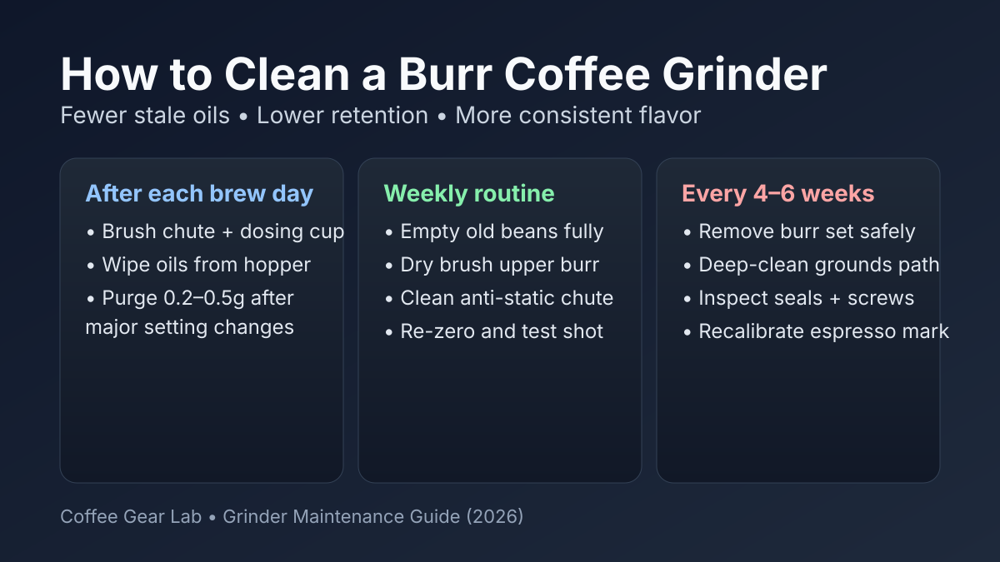

How to Clean a Burr Coffee Grinder (2026): Fast Routine for Better Cups
If your coffee started tasting flat, bitter, or dusty, old grinder residue is usually the reason. This guide gives a practical cleaning routine you can actually stick to, so you get cleaner flavor, less retention, and fewer random dial-in headaches.

Quick answer: Brush out loose grounds after each brew day, wipe bean oils weekly, and deep-clean burrs every 4-6 weeks. This prevents stale taste, lowers static/retention issues, and keeps espresso or filter settings repeatable.
Tools you need (and what to skip)
- Soft grinder brush: for burr teeth, chute edges, and grounds cup.
- Microfiber cloth: for hopper oils and exterior wipe-down.
- Hand blower or bulb: helps clear hidden retention pockets.
- Optional grinder cleaning pellets: useful for oily beans, but still follow with brushing.
Avoid: water on burr assemblies, harsh degreasers, or metal picks that can damage burr edges and throw calibration off.
Daily 2-minute routine (after brewing)
- Run grinder empty for 1-2 seconds to clear loose grounds.
- Brush grounds cup and chute exit.
- Wipe hopper lip and lid where oils collect.
- If you changed settings a lot, purge 0.2-0.5g before the next brew.
This tiny routine does most of the work. It keeps flavor clean and lowers static buildup that creates messy clumps.
Weekly 10-minute routine
- Empty remaining beans and remove hopper (if removable).
- Dry-brush upper burr and adjustment collar area.
- Clean chute path and anti-static flaps gently.
- Wipe hopper and lid thoroughly before reinstalling.
- Pull a test brew and re-confirm your usual setting.
If you pull espresso daily, combine this with our burr grinder settings for espresso workflow so your grind mark stays repeatable.
Deep clean every 4-6 weeks
For heavy use, deep cleaning is mandatory. It removes compacted fines and old oils that brushing alone misses.
- Unplug grinder and remove hopper + top burr according to manufacturer steps.
- Brush burr chamber walls and threads thoroughly.
- Inspect burr edges and alignment points for wear or debris.
- Reassemble carefully, then re-zero if your grinder supports calibration.
- Run a small sacrificial dose and discard before brewing.
If your grinder still sprays fines everywhere after deep cleaning, it may be a design limitation. Compare upgrades in our best burr coffee grinders under $200 guide and French press grinder roundup.
Common mistakes that hurt grinder performance
- Using water in the burr chamber: leads to rust risk and clumped grounds.
- Ignoring oily dark roast buildup: creates stale flavors fast.
- Changing dose, ratio, and grind at once: makes troubleshooting impossible.
- Skipping maintenance for months: causes retention spikes and inconsistent extraction.
FAQ
How often should I clean my burr grinder?
Do a quick brush clean after each brew day, a deeper brush/wipe weekly, and a full burr-chamber clean every 4-6 weeks for regular home use.
Can I use rice to clean a coffee grinder?
No. Dry rice can stress burrs and motors. Use grinder-specific pellets if needed, then finish with a brush clean.
Why does my grinder retain more coffee in humid weather?
Humidity changes static behavior and can make fines cling in the chute. More frequent brushing and occasional purge doses help stabilize output.
Do I need to recalibrate after deep cleaning?
Sometimes. If your grinder has a zero-point adjustment and your usual setting shifts after reassembly, recalibration keeps espresso and filter references consistent.
Will cleaning improve espresso shot taste?
Yes. Removing stale oils and packed fines often improves sweetness and clarity while reducing random sour/bitter swings between shots.
Related guides
- Best Burr Coffee Grinders Under $200
- Burr Grinder Settings for Espresso
- Best Coffee Grinder for French Press
- Best Coffee Grinder for Pour Over
- Coffee Brewing Ratio Guide